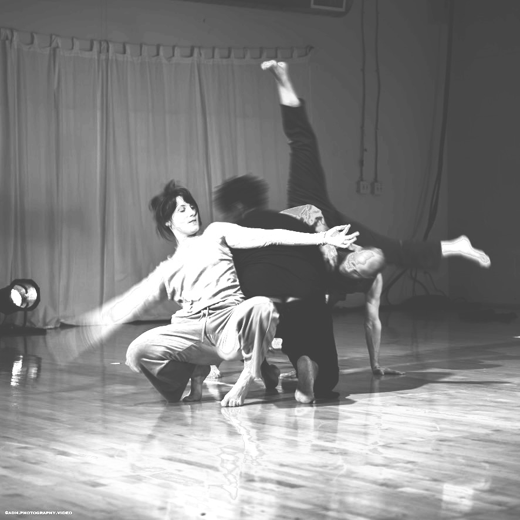
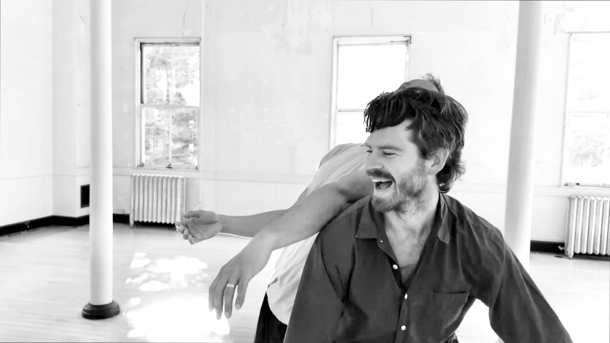

An Axis Syllabus and Contact Improvisation Workshop
with Marcus van Duren and Emily Jones
Aug 7–9Portland, OR @ FLOCK
Resonance & Response is an Axis Syllabus and Contact Improvisation workshop centered on physical conversation, both with ourselves and with the people we are dancing alongside. We practice listening through the body, noticing potential, and making movement choices that are supported by the physical conditions at hand.
Drawing on theory and practice from the Axis Syllabus, we deepen our understanding of anatomy, movement, and our relationship to physics through connections to the natural world, honoring complexity, nuance, adaptability, and interdependence within the body in motion.
In this workshop, we surf between solo improvisational explorations, set movement motifs, and Contact Improvisation practices, allowing these different modes to inform one another and create a richer palette for dancing.
Schedule
Friday: 9:30–11:30am, 12:30–3:30pm
Saturday: 10:30am–4:30pm
Sunday: 9:30am–2:30pm
Friday
9:30–11:30am
Surfacing Routes — sequential descents and departures
12:30–3:30pm
Maps of Motion — (anatomy picnic) presentation and group discussion of fascia, interstitium, spinal mechanics, and more!
Saturday · 10:30am–4:30pm
The Conversational Nature of Contact — Contact Improvisation as physical dialog: exchanges informed by noticing potentials, following impulse, making invitations, releasing expectations in support of genuine exchange.
Guided by the Curve — Exploring rolling, crawling, walking, jumping, and all the movement in between while following the nuances of our hips and shoulders.
Sunday · 9:30am–2:30pm
Earth to Flight Continuum — revisiting, further developing and expanding themes, movement patterns and scores from previous classes. Part solo dancing, part CI.
Closing Group Score: Overscore — group score ritual, improvise through a structure, accompanied by a live musician.

Emily Jones
Emily Jones is a dancer, choreographer, movement educator, and bodyworker based in Portland, Oregon. Her interdisciplinary practice centers intuition, embodied learning, and movement-based research, with particular attention to community care, relational ethics, and communication within spaces of learning and collaboration. She has performed with numerous artists in Portland and the Bay Area and is engaged in a long-term artistic collaboration with Hannah Krafcik. Their interdisciplinary work has been presented nationally. Emily facilitates contact improvisation jams, organizes events, teaches and performs with the Queer Contact Improvisation Cohort based in Portland. She is a certified Axis Syllabus teacher and offers classes and workshops informed by this lens both locally and beyond.

Marcus van Duren
Marcus van Duren is a dancer, teacher and musician based in the San Francisco Bay Area. Marcus has intensively studied movement and dance since his discovery of contact improvisation in 2012. He has been teaching CI locally and internationally for more than 10 years. Marcus is an active member of the axis syllabus community and is currently an Axis Syllabus Teacher Candidate. For Marcus, teaching is not just about transmitting information. It's also about creating a safe space for participants to explore, take risks and collaborate. When it comes to teaching contact improvisation, Marcus specializes in merging the technical information of bio-mechanics with play, humor and ritual to create engaging learning experiences that aim to serve the whole person, not just the dancer.